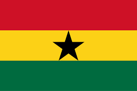

About Me
My name is Bright Owusu, and I’m from Accra, Ghana. I enjoy coding and exploring new technologies. I’m passionate about building software solutions that solve real-world problems and improve people’s lives. Besides coding, I’m interested in learning about design, entrepreneurship, and how technology shapes our future. In my free time, I love reading, discovering new music, and connecting with people who share similar interests. I’m always eager to learn, grow, and take on new challenges.
Accra, Ghana

Ghana is a beautiful country in West Africa known for its rich culture, friendly people, and vibrant history. From golden beaches to colorful festivals, there’s so much to explore.